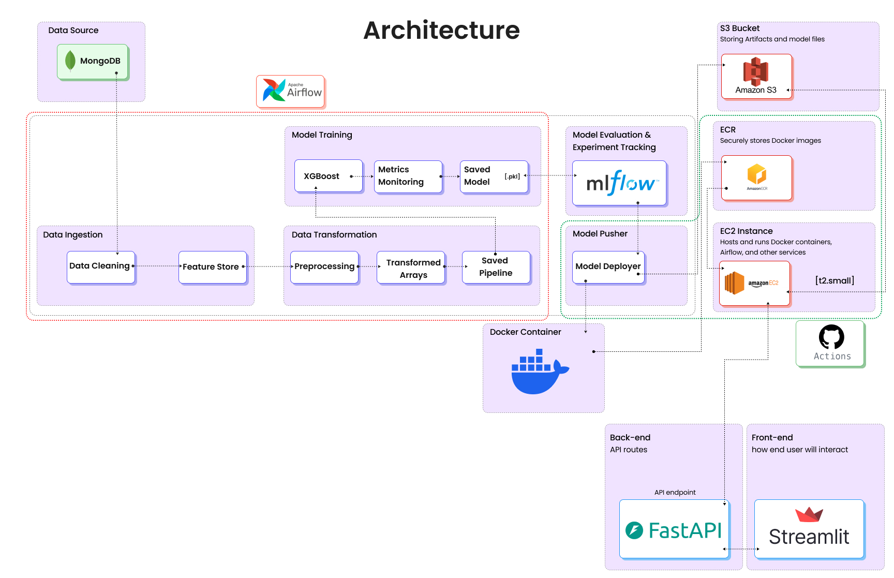
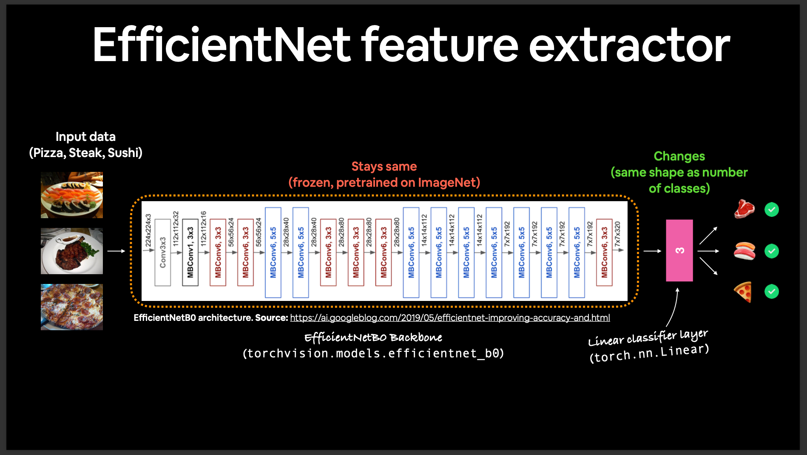
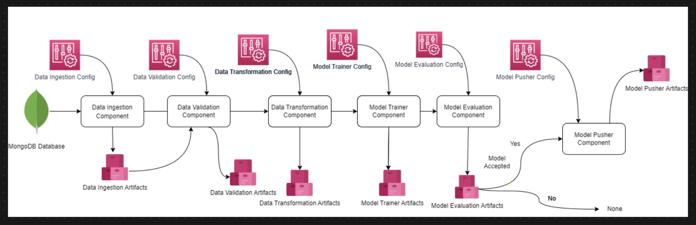

Featured Work

Network Security System - MLOps Project
Developed a production-ready MLOps pipeline to detect malicious URLs, featuring a fully automated CI/CD workflow with GitHub Actions and Docker. The system trains, validates, and deploys a machine learning model, serving predictions via a containerized FastAPI application on AWS EC2.

End-to-End FoodVision MLOps Pipeline
An end-to-end MLOps project that refactors a PyTorch research notebook into a production-ready system. This project features robust experiment tracking with TensorBoard and serves an image classification model through two interactive web applications built with both Flask and FastAPI.
AWS SageMaker Machine Learning Pipeline - Mobile Price Classification System
An end-to-end ML pipeline built on AWS SageMaker to demonstrate a real-world, cloud-native workflow. This project trains, deploys, and serves a scikit-learn model for mobile price classification, bridging the gap between local development and scalable MLOps.
Text Summarizer Using HuggingFace Transformers
An end-to-end MLOps project that fine-tunes a HuggingFace Pegasus model for conversational text summarization. The entire system is containerized with Docker and served via a high-performance FastAPI backend, demonstrating a complete production-ready workflow.

Student Performance Prediction System - End-to-End ML Engineering Project
Developed a full end-to-end machine learning pipeline to predict student math performance from raw data. The project features a modular, production-ready architecture that trains the best regression model and serves predictions via a Flask web application deployed on AWS.
Multi-Agent Financial AI System
Built a multi-agent AI system using Groq and the Agno framework to automate comprehensive stock analysis. The system orchestrates specialized agents for financial data retrieval and web research to deliver synthesized, actionable insights in seconds.
Video Summarizer: An Agentic AI Approach with Google Gemini
An intelligent AI agent that provides deep analysis of video content. It uses Google's multimodal Gemini model to understand video and the `Agno` framework to autonomously perform supplementary web research, delivering insights that go far beyond simple summarization.